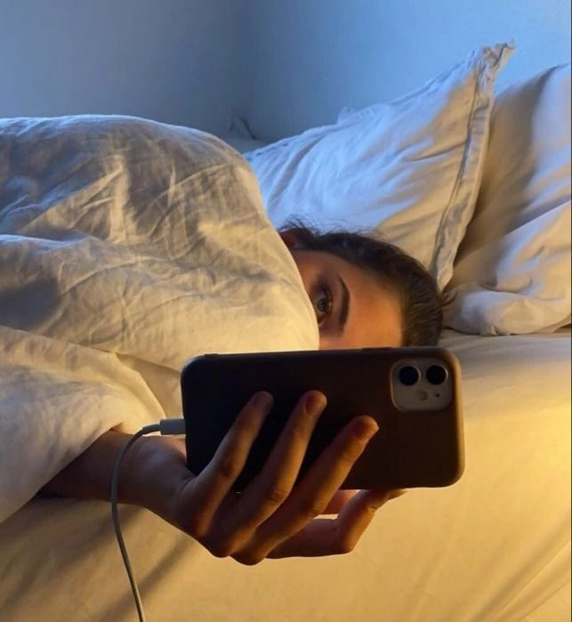

Screens are everywhere. Phones, laptops, tablets, TVs — for many of us, they’re part of work, school, connection, and downtime. But as screen time has increased, so have questions about how it affects our sleep, mental health, brain function, and even hormones.
As a health practitioner, I see this daily. Parents worried about their kids’ moods and sleep. Teens struggling with focus and anxiety. Professionals feeling wired but exhausted — unable to truly rest even when they “log off.”
Let’s break down what the research says — in a clear, practical way — and how it shows up in real life.
One of the most well-studied effects of screen time is its impact on sleep quality.
Screens emit blue light, which suppresses melatonin, the hormone responsible for signaling to your body that it’s time to sleep. When melatonin is disrupted, your circadian rhythm — your internal clock — gets thrown off.
A consensus statement from sleep experts found that screen use, especially in the evening, is consistently associated with delayed bedtimes, shorter sleep duration, and poorer sleep quality, particularly in children and adolescents
In practice, I see this with:
- Teens who can’t fall asleep until 1–2 a.m.
- Parents whose kids wake up exhausted despite “enough” sleep
- Adults who feel wired at night and groggy in the morning
Sleep disruption doesn’t just make you tired — it affects every other system in the body.
Mental health and screen time are deeply connected — especially when screen use replaces rest, movement, and real connection.
A large U.S. survey found that adolescents who spent more than four hours per day on screens had significantly higher rates of anxiety and depressive symptoms compared to those with lower screen exposure
Another peer-reviewed study found that screen time was linked to depression and anxiety, partly because it disrupted sleep, creating a compounding effect
What’s especially compelling is a randomized controlled trial published in BMC Medicine. Participants who reduced smartphone use for just three weeks experienced:
- Improved mood
- Lower stress
- Better sleep
- Increased overall well-being
This suggests screen time doesn’t just correlate with mental health issues — it may actively contribute to them
I’ve had clients tell me, “I didn’t realize how anxious I felt until I stepped away from my phone.” That awareness alone can be life-changing.
Our brains were not designed for constant stimulation, notifications, and rapid information switching.
Research shows that excessive screen use is associated with:
- Reduced attention span
- Lower executive function (planning, impulse control)
- Decreased academic and work performance
An integrative review of screen media overuse found consistent links between high screen exposure and poorer cognitive and emotional outcomes, particularly in children and adolescents
Another large review confirmed that screen time impacts cognitive development, focus, and psychological well-being across multiple age groups
For professionals, this often looks like:
- Difficulty concentrating
- Brain fog
- Needing constant stimulation to stay engaged
For kids and teens, it can show up as learning struggles and emotional dysregulation.
Screen Time, Hormones & Overall Health
While research on screen time and hormones directly is still emerging, we know this much: sleep regulates hormones.
When sleep is disrupted, it affects:
- Melatonin (sleep-wake cycle)
- Cortisol (stress hormone)
- Hunger hormones like ghrelin and leptin
- Overall metabolic and immune health
Because screens disrupt sleep, they indirectly disrupt hormonal balance. The same consensus research linking screens to poor sleep highlights this downstream effect on overall health and regulation
Many clients notice:
- Increased fatigue
- Heightened stress
- Cravings and blood sugar instability
- Feeling “off” hormonally without obvious cause
Reducing evening screen exposure is often one of the first steps that helps restore balance.
What This Means for Parents, Teens, and Professionals
This isn’t about eliminating screens — it’s about intentional use.
Simple, research-supported strategies include:
- Creating screen-free time before bed (30–90 minutes)
- Keeping phones out of bedrooms at night
- Using blue-light filters in the evening
- Taking regular breaks during workdays
- Modeling healthy screen habits for children
Small changes can create big shifts in sleep, mood, focus, and energy.
Screens are powerful tools — but they also carry real physiological and psychological effects. The science is clear: how and when we use screens matters.
By becoming more aware and setting gentle boundaries, we don’t just improve sleep or focus — we support long-term mental, cognitive, and hormonal health.
Sometimes, the most powerful reset isn’t adding something new — it’s simply logging off.